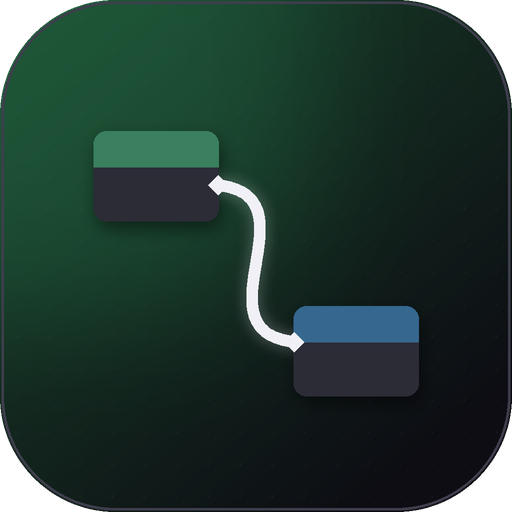
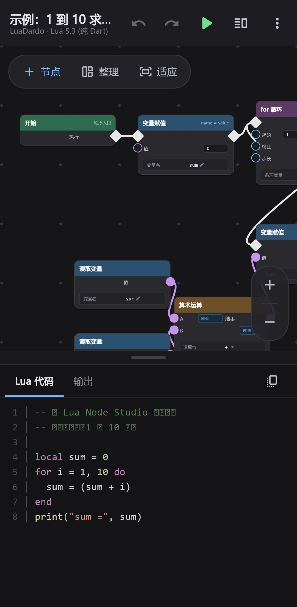
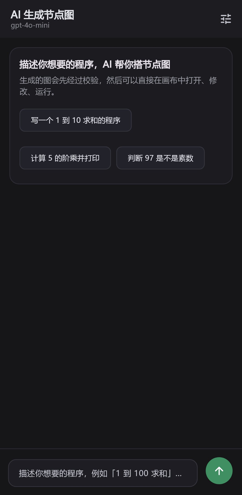
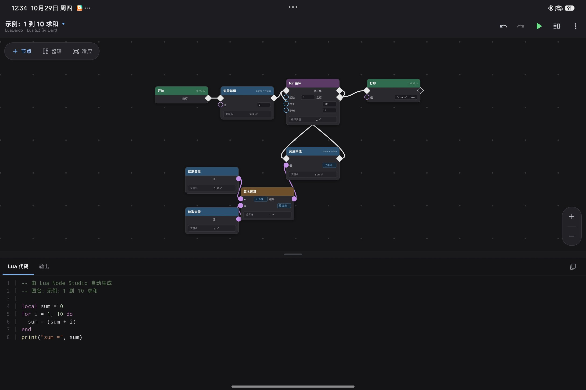
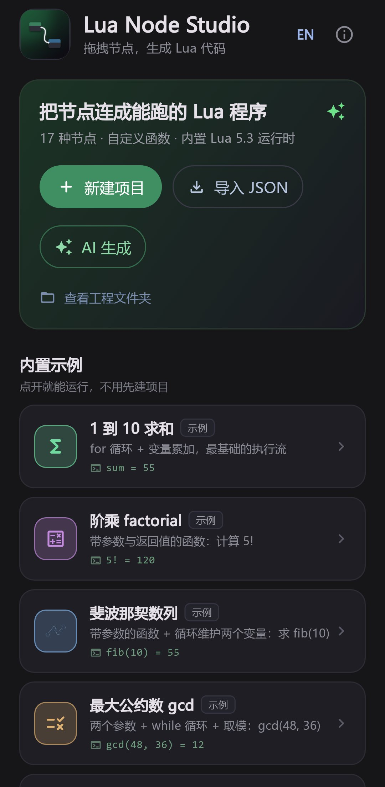

可视化节点画布
拖拽、连线、缩放、平移，网格对齐；执行流用菱形端口，数据流用圆形端口，一眼分清。

Lua Node Studio 节点编程Lua Node Studio 是一个可视化节点编程编辑器：把「开始」「循环」「打印」这样的节点拖到画布上连起来， 就能实时得到一份可读的 Lua 5.3 源码，并在内置运行时里直接执行。手机和电脑都能用， 还能接入你自己的 AI 模型，用一句话生成节点图。
开源免费 · 无需注册 · 工程数据只保存在本机

从节点到代码，再到运行结果，全部在同一个界面里完成。
拖拽、连线、缩放、平移，网格对齐；执行流用菱形端口，数据流用圆形端口，一眼分清。
执行流决定语句顺序，数据流递归展开为表达式；分支与循环自动找到汇合点，不需要额外的 merge 节点。
纯 Dart 实现的 Lua 解释器，在 Isolate 中执行并带 8 秒超时保护，不卡界面，输出面板实时显示 print 结果。
内置示例和「我的项目」在同一个列表；新建、导入 JSON、重命名、创建副本、删除都在这里，自动保存随时恢复。
接入任意 OpenAI 兼容接口（OpenAI / DeepSeek / Ollama / 自建网关），描述需求即可得到经过校验的节点图，密钥只留在本机。
中文 / English 一键切换，选择会被记住；同一份代码构建 Android APK 与 Windows 便携版。
在项目管理页点「AI 生成」，填入你自己的接口地址、密钥和模型即可。AI 返回的节点图会先经过严格校验——节点类型、端口、执行流与数据流规则、是否需要补「开始」节点、坐标缺失时自动布局。
支持 OpenAI、DeepSeek、通义、Kimi、Ollama 以及任意兼容服务；保存前会先测试连通性。
例如「写一个 1 到 10 求和的程序」「计算 5 的阶乘并打印」。
查看节点/连线数量与警告，一键在画布打开，继续修改、生成代码、运行。
API Key 只保存在本机设置文件里，不会上传；应用只会向你填写的地址发起请求。
查看配置说明 →
以下截图来自应用实际界面，可在 GitHub 仓库查看大图。


下载按钮始终指向最新版本。所有历史版本与校验信息都在 GitHub Releases。
每一个都配好了节点与预期输出，适合学习或作为新工程的起点。
sum = 555! = 120fib(10) = 55gcd(48, 36) = 12true源码、Issue 与 PR 都在 GitHub。觉得有用的话，给个 Star 会很有帮助。